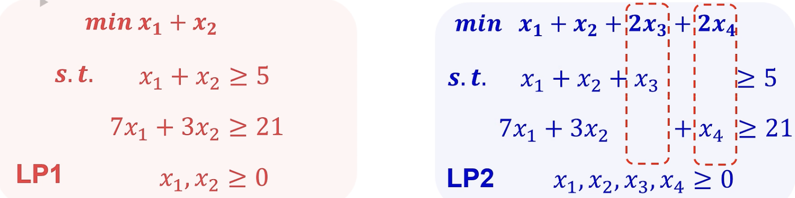
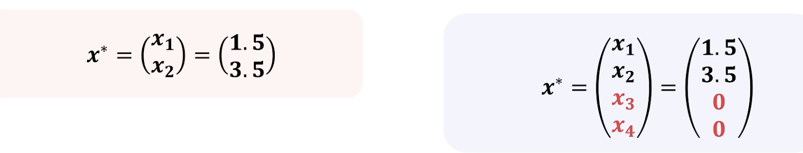
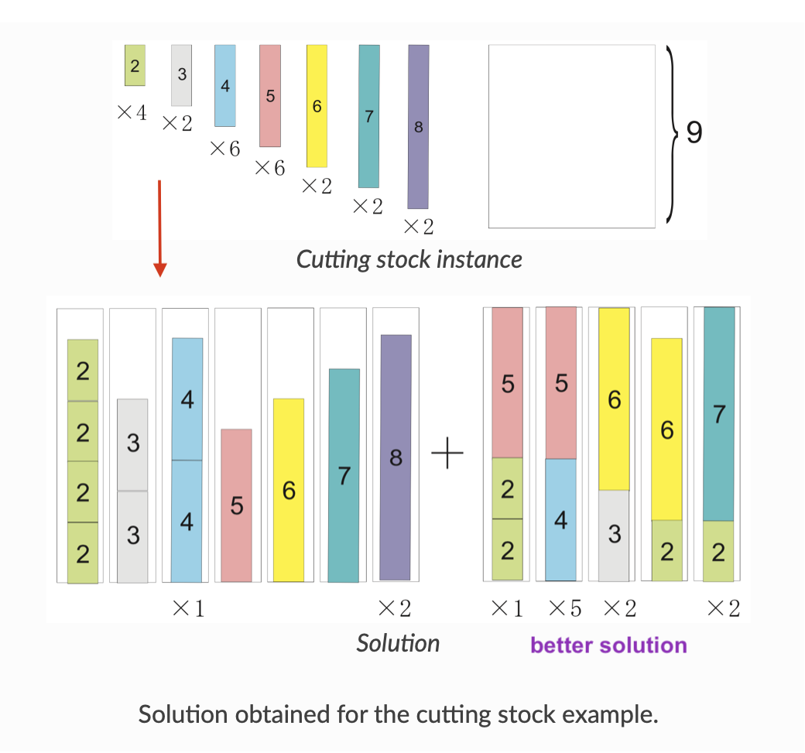
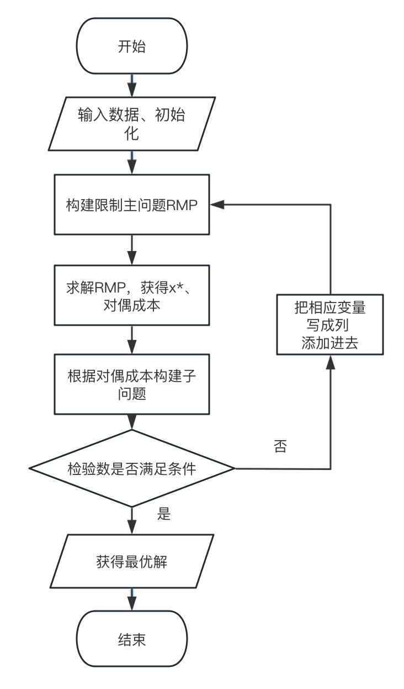
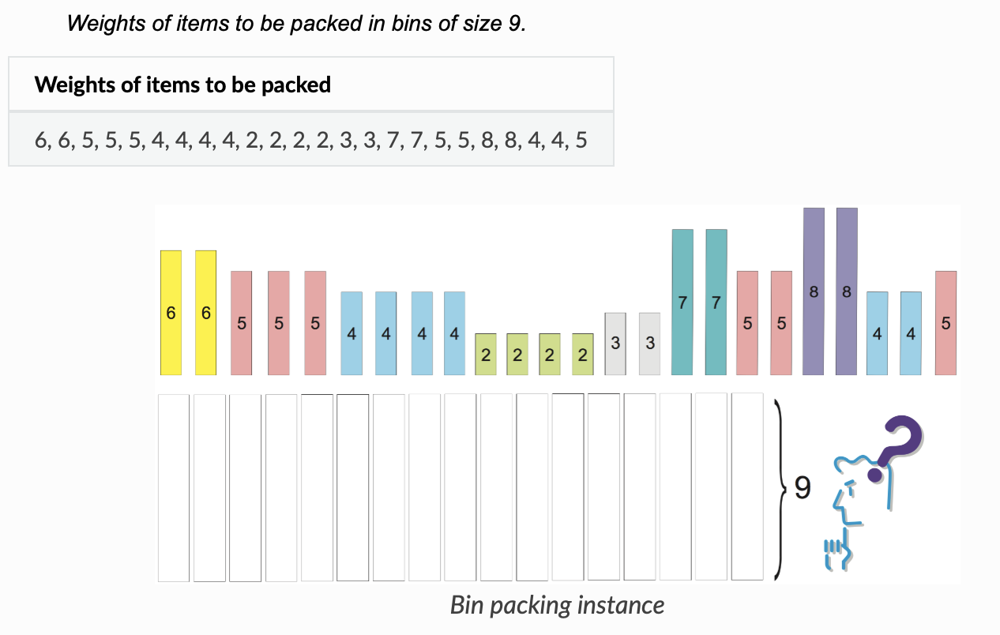
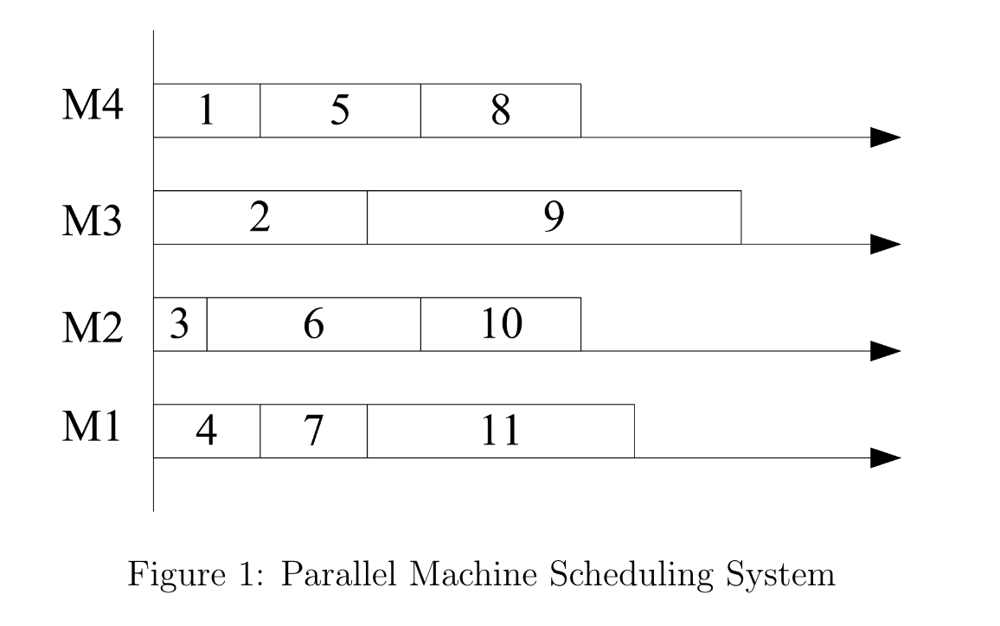

列生成算法 (Column Generation)¶
参考链接
-
同济大学梁哲老师的这个视频，合集整理得十分详细，中英文课程都有，还有很多参考链接。
-
东南大学程琳老师课题组的讲解视频，侧重于从单纯形法到列生成的联系、启示、几何展示与一些数学推导；
-
代码编程：推荐Gurobi 官网的 CSP傻瓜教程。写得很专业，有官方提供的代码。页面能帮你把可视化结果都搞出来，寓教于乐。
从单纯形法开始¶

左右两个线性规划问题，LP2只是增加了两个变量，单纯形表引入了两个新列，但是都是非基变量，加入两个列之后对最优解没有影响。

在实际中，可能存在一系列问题，他们的列很多，没有办法把这些列枚举穷尽完，而单纯形法在出入基操作上每次都需计算检验数，需要显式地对入基的列进行计算。
所以可以反过来考虑，让一个初始没有包含所有最优基的一个单纯形表慢慢生长，变成一个包含了最优基的表，通过求解这个单纯形表，在不用显式遍历所有列的情况下，能够更早地求得最优解。
三个思路
- 没有必要添加所有的变量。（No need for all variables）
- 开始时，只需要一个可行的基。（Initially, find feasible variables）
- 最终要生成一个最优基。（Optimal basis!）
假设我们枚举单纯形表所有的列，这个单纯形表对应的就是主问题（Master Problem, MP）。一开始，我们没有枚举所有的列，此时的单纯形表是不完整的，对主问题的描述也不完整，这张表对应的就是 受限主问题（Restricted Master Problem, RMP） 。 而，解决“找到一个列，加入到受限主问题中”这个过程的问题，就是子问题（Sub Problem）。
列生成，对基采用了隐枚举的方式，利用求解子问题，从受限主问题不断生成更好的基，直到出现最优基，此时受限主问题便等价于主问题，但是结构更加轻巧。
Cutting Stock Problem（下料问题）¶
有三种型号的木材，9寸、14寸和16寸的木材，其成本分别为5，9，10. 我们也有一系列的订单：
| 原料长度 | 成本 | 小木材长度 | 需求数量 |
|---|---|---|---|
| 9 | 5 | 4 | 30 |
| 14 | 9 | 5 | 20 |
| 16 | 10 | 7 | 40 |
怎么切分这些木材（假设原料数量是够用的），使得所用到的木材的成本最小。
这个问题最初是前苏联科学家Kantorovich提出并建模的，最初的模型与现在略有不同，也更加复杂一点，先展开目前我们最常用的解决方法。

比如，对于原料木板，列出一些切割方法（Cutting Pattern）。什么是切割方法？比如，对于 一个 9寸的木板，我们可以这样切：
- 切成2个4寸的；剩下1寸废料；
- 它切成1个4寸的，一个5寸的；不剩废料；
对于一个14寸的木板，我们可以：
- 切成3个4寸的，剩下2寸废料；
- 切成2个4寸的，一个5寸的，剩下1寸废料；
- 切成2个4寸的，剩下6寸废料，这种情况下一眼就能看出来，效率不高，分明可以用1个9寸木板就切出来，不仅废料数量多，而且2个4寸的切法可以用一个9寸的切出来。
- ... etc
不过先不从浪费的角度考虑，上述每一种切法就构成了一个Pattern。我们简单罗列一下，就能发现很多很多个Pattern ：
| 方案 | 切出的4寸个数 | 切出的5寸个数 | 切出7寸的个数 | 需要的成本（也就是单个原料的成本） |
|---|---|---|---|---|
| \(s_1\) | 2 | 0 | 0 | 5 |
| \(s_2\) | 1 | 1 | 0 | 5 |
| \(s_3\) | 0 | 0 | 1 | 5 |
| \(s_4\) | 3 | 0 | 0 | 9 |
| \(s_5\) | 2 | 1 | 0 | 9 |
| \(s_6\) | 1 | 2 | 0 | 9 |
| \(s_7\) | 1 | 0 | 1 | 9 |
| \(s_8\) | 0 | 1 | 1 | 9 |
| \(s_9\) | 0 | 0 | 2 | 9 |
| \(s_{10}\) | 4 | 0 | 0 | 10 |
| \(s_{11}\) | 2 | 0 | 1 | 10 |
| \(s_{12}\) | 1 | 1 | 1 | 10 |
| \(s_{13}\) | 0 | 3 | 0 | 10 |
| ... | ... | ... | ... | ... |
上面列的不是“所有可能的pattern”，仅作示意，实际切法很多，我们主要罗列的是“比较高效利用木板”的切法。
现在我们的目标就变成了“最小化总成本，也就是所用的切法的成本 \(\times\) 用这种切法的木板数”。
接下来写数学模型。
决策变量：\(x_j\) : 采用第 \(j\) 种切割方案切割的木材原料的数量。
参数：\(c_j\) : 与第 \(j\) 种切割方案相关的参数，指第 \(j\) 种切割方案切的原料的成本。比如第 \(j\) 种方案切的是3种原料木材里的第1种，那么这值就是1根第1种木料的成本，许多个切割方案会对应同一个成本。
解释一下 \(\mathbb{a_j}\) 对应了什么。
这是个向量，\(\mathbb{a_j} = \begin{bmatrix} a_{1j} \\ a_{2j} \\ a_{3j} \end{bmatrix}\)，表示第 \(j\) 个pattern中，切出的第1种目标木材、第2种目标木材、第3种目标木材的数量。比如，以上述方案1为例，\(a_1 = \begin{bmatrix} 2 \\ 0 \\ 0 \end{bmatrix}\).
(英文的具体解释是 \(a_{ij}\) is the quantity of i-th length piece for the j-th cutting pattern)
而 \(\mathbb{b}\) 就是，需求的3种木材的数量，在这个例子中就是 \(\begin{bmatrix} 30 \\ 20 \\ 40 \end{bmatrix}\)。
求解¶
怎么求解这个问题？
传统方法，当然是暴力枚举。大不了我把所有的pattern都列下来，然后解一个确定模型即可。
这种方法存在的问题
- 如果木材的长度增加，我可以切出来的木板数量一定是指数增长的，上面的式子尚未枚举完全部的切法。
（想象一下，如果你的原材料都是100，150，200的长度木材，但是你需要的都是4，5，9寸这种短木材，你100就可以切：25个4，或者23个4，1 个5 ... 情况很多很多）
- 有一些切法可以明显看出利用率比较低。但是实现的时候很难具体发现哪些利用率低，而是一股脑把所有的切法都写上去。比如你可能会算出一种 \(x_{14}\) pattern，切1个4寸，1个5寸，0个7寸的。这种利用率会比：1个4寸，2个5寸，0个七寸的，浪费很多。
解决这个问题一个最基本也是最重要的思路就是，我们可不可以把一些利用率高、效果好的切法放进去，其他效果不好、利用率低的，就不当作pattern了——隐枚举法。
我们用算法解这个RMP之后，就想，我们能不能得到一个新的Pattern，让原来的结果更好。
逻辑上，和单纯形法类似，每次进-出基，要能实现一次Improve。
Can I get a pattern, to improve the current solution?
区别：
单纯形法的进、出基变量，一开始就已经存在在单纯形表里了。而在列生成里，进基变量不在模型里，而是要你去找的。
解好RMP后，我们就能得到每个约束对应的 Dual Cost（就是常说的影子价格），我们要利用Dual Cost，求解子问题（Sub-Problem），从而找到一些“好”的Pattern(s)，这些Pattern(s)不在原来的模型里，但是可以提高当前目标的质量（Improve current Solution）. 我们把这些“好”的Pattern加入到RMP中，继续迭代。
英文描述可能更加准确：
In Column Generation, Can we find a \(x_{n + 1}\) such that \(\delta_{n + 1} - c_{n + 1} > 0\)。
这个公式实际就反映单纯形法的“检验数”。
本文语境下，检验数（reduced cost）的表达式统一记为 ： \(\delta_{n + 1} - c_{n + 1} = \omega a_{n + 1} - c_j = \sum \omega_i a_{ij} - c_j\)。在此标记下，对于最小化问题，求得最优解的条件是每个变量的检验数，都是非正的。
对偶的意义
这里结合一下前面的数据来解释一下对偶的意义。
案例里约束对应的右端项 \(\mathbb{b} = \begin{bmatrix} 30 \\ 20 \\ 40 \end{bmatrix}\) , \(\omega_1, \omega_2, \omega_3\) 分别对应这三个约束，就是约束 \(i\) 对应的对偶成本（影子价格）。经济意义是，要多切出一个（4寸or，5寸or 7寸）的木板，可以获得的价值。
之所以对生成的列，要求它们满足 \(\delta_{n + 1} - c_{n + 1} > 0\)，含义就是：新切出来的目标木料的价值之和，比我多切出这些目标木料所花费的这根原料木板的成本，还要高。
我们的子问题就是，对于一个原料木材，要采纳什么方案（也就是问，要切几个4寸的，几个5寸的，几个7寸的，才能实现上述目标？）。这就是 \(a_{ij}\)。
我们可以写出模型：
这里的 \(L_k\)，对应你原材料的长度的种类，比如9，14，15。如果你从9寸的开始切，\(L_k = 9\)，以此类推。每个长度都算一遍。
这里的 \(l_i\) 就是，第 \(i\) 种目标木材的长度（对应4，5，7），\(m\) 对应目标木材的下标。
这里有一种情况，比如说我们 \(L_k\) 有三种情况，会不会每个 \(L_k\) 求下来，目标函数总是 \(\leq 0\) 的。这就意味着：不管我怎么折腾3种原材料，怎么切，都不存在一个更好的方案，使得价值 - 成本 > 0了，也就意味着，我们已经找到了最优解。
if \(\max \sum_i \omega_i a_{ij} - c_k \leq 0, \forall k\)，stop. Found Opt Sol.
if \(\max \sum_i \omega_i a_{ij} - c_k > 0\) , pattern is good, add to RMP.
我们可以把整个求解过程罗列如下：

实战¶
- Step 0. Init
\(a_1 = \begin{bmatrix} 2 \\ 0 \\ 0 \end{bmatrix}, a_2 = \begin{bmatrix} 0 \\ 1 \\ 0 \end{bmatrix}, a_3 = \begin{bmatrix} 0 \\ 0 \\ 1 \end{bmatrix}, c_1 = 5, c_2 = 5, c_3 = 5\)，
- Iter 1.
Solve RMP, \(x^* = \begin{bmatrix} 15 \\ 20 \\ 40 \end{bmatrix}, \omega^* = \begin{bmatrix} 2.5 \\ 5 \\ 5 \end{bmatrix}\)
- Sub Problem 1. （切9寸长的）
- Sub Problem 2. （切14寸长的）
- Sub Problem 3. (切16寸长的)
仔细看：这三个问题实际上都是背包问题。有很多解法。
- Sub Problem 1. Sol \(a_j = \begin{bmatrix} 1 \\ 1 \\ 0 \end{bmatrix}\), Obj = 2.5
- Sub Problem 2. Sol \(a_j = \begin{bmatrix} 1 \\ 2 \\ 0 \end{bmatrix}\), Obj = 3.5
- Sub Problem 3. Sol \(a_j = \begin{bmatrix} 0 \\ 3 \\ 0 \end{bmatrix}\), Obj = 5
这三个情况下我们发现目标函数都 > 0。我们可以把3个都加到主问题里，也可以只加Obj最大的那个。不同的加法可能对问题求解到最优的收敛速度有影响。
我们把第3个情况加入RMP中。新问题就多了一个决策变量，多了一个pattern，如下。
这里就进入下一个迭代。
- Iter 2. 解新的 RMP。
\(x^* = \begin{bmatrix} 15 \\ 0 \\ 40 \\ 20 / 3 \end{bmatrix}, \omega = \begin{bmatrix} 5 / 2 \\ 10 /3 \\ 5 \end{bmatrix}\)。有变化的是新的 dual Cost.
我们继续按照上面的写子问题，注意子问题的目标函数参数也要调整！
- Sub Problem 1. （切9寸长的）
- Sub Problem 2. （切14寸长的）
- Sub Problem 3. (切16寸长的)
解下来结果分别是：
-
\(a_j = \begin{bmatrix} 0 \\ 0 \\ 1 \end{bmatrix}, \delta_j - c_1 = 0\)
-
\(a_j = \begin{bmatrix} 0 \\ 0 \\ 2 \end{bmatrix},\delta_j - c_2 = 1\)
-
\(a_j = \begin{bmatrix} 0 \\ 0 \\ 2 \end{bmatrix},\delta_j - c_3 = 0\)
我们当然选第二个 \(a_j\) 加入RMP中。
- Iter 3: 这时候RMP有5个变量了。解下来 \(x^* = \begin{bmatrix} 15 \\ 0 \\ 0 \\ 20 / 3 \\ 20 \end{bmatrix}, \delta^* = 322. \omega = \begin{bmatrix} 5 / 2 \\ 10 / 3 \\ 9 / 2 \end{bmatrix}\)
这里继续求解子问题。
-
\(a_j = \begin{bmatrix} 1 \\ 1 \\ 0 \end{bmatrix}, \delta_j - c_1 = 0.82\);
-
\(a_j = \begin{bmatrix} 1 \\ 2 \\ 0 \end{bmatrix}, \delta_j - c_2 = 0.17\);
-
\(a_j = \begin{bmatrix} 0 \\ 3 \\ 0 \end{bmatrix}, \delta_j - c_3 = 0\),
选择 \(a_j = \begin{bmatrix} 1 \\ 1 \\ 0 \end{bmatrix}\) 加入主问题，继续迭代。
- Iter 4. 解RMP，\(x^* = \begin{bmatrix} 5 \\ 0 \\ 0 \\ 20 \\ 20 \end{bmatrix}，\delta = 305， \omega = \begin{bmatrix} 5 /2 \\ 5 /2 \\ 9 /2 \end{bmatrix}\)
继续解子问题～
-
\(a_j = \begin{bmatrix} 0 \\ 0 \\ 1 \end{bmatrix}, \delta_j - c_1 = -0.5\);
-
\(a_j = \begin{bmatrix} 0 \\ 0 \\ 2 \end{bmatrix}, \delta_j - c_2 = 0\);
-
\(a_j = \begin{bmatrix} 0 \\ 0 \\ 2 \end{bmatrix}, \delta_j - c_3 = 0\),
我们发现所有的检验数都是非正的。找到最优解了。停止迭代。
备注
这里还需要注意，我们求背包问题的时候，对具体的求解算法没有具体要求，我们甚至不一定要求到子问题的最优解。在实际问题中，最优解的求解反而可能是十分困难的。面对复杂的子问题，我们只要求得一个可以Improve 原问题的解，就够了。这意味着哪怕是启发式的算法、遗传算法之类，同样可以在求解子问题上发挥作用。
一些小问题的处理
- 上面线性松弛问题解出的正好是IP。如果解不到整数解怎么办？在CSP中，一个启发式的思路是向上取整，得到的结果是等价的。（相当于有一些冗余的木料）
- 用你生成的所有变量（e.g. 有6000个），解RMP，不过不再是解LP，而是添加IP约束。一般情况下，IP和LP之间的Gap，会很小。
- 如果方法还是不好，就需要用 Branch-And-Price 去解决这个问题。这个想法就是把 Branch and Bound 和Column Generation结合起来。
问题的延伸和拓展¶
One-Dimension Bin Packing Problem：有一些重量的货物，和一些容量的箱子。需要决定把哪些货物装到箱子里，使得每个箱子里装的货物重量不超过箱子的容量限制，同时最小化用到的箱子的数量。（或者，不同规格的箱子有不同的使用成本，最小化用到的所有箱子的总成本）。
把箱子看成CSP问题中的原料木材，把货物看作是目标木材，货物重量看作目标木材的长度。在这种情境下的 Bin-Packing Problem 实际上就是CSP问题。

Parallel Machine Scheduling （并行机排程）¶
有 \(m\) 台机器，有 \(n\) 项工作 (\(j_1, ...j_n\))。 记工作完成的时间是 \(c_j\)，记工作的重要性为 \(w_j\)。需要把这些工作分配到机器上，使得所有工作完成时间的加权和最小。
同时满足如下假设：
- 工作一旦在某个机器上开始了，就不能中断；
- 同一个工作在所有机器上的加工时间是一样的；
- 每个工作的权重系数一定是大于0的；
模型¶
定义一个Schedule：也就是这个机器上进行工作的一个序列。注意，即使机器上进行的是相同的某些工作，这些工作的先后顺序也会构成不同的Schedule。用 \(x_s\) （0-1 Binary）表示这个方案是否被选取；

- 一些参数：
- \(a_{js}\) : 如果工作 \(j\) 在Schedule \(s\) 中，那么就为1，否则为0.以上图为例，\(a_{14}, a_{54}, a_{84} = 1\), \(a_{23}, a_{93} = 1\)，以此类推。
如果我们给定一个schedule之后，也就可以算出这个方案对应的成本是多少（因为其完成时间也就可以直接算出来）。而 \(x_s\) 实际上包含了机器的信息。因此我们可以把主问题写成如下形式：
主问题的目的就是：从一系列Schedule里选 \(m\) 个出来，满足成本最小的这个需求。
于是新的问题变成了，怎么找一些“好的”方案，形成 \(x_s\) 的这个集合，在这个集合里进行选择，找到最优解呢？
我们可以把主问题的检验数写出来：
这里的 \(\lambda_0\) 对应的是第二个约束的对偶成本，因为这个约束与我们生成的列 \(a_{js}\) 无关，所以 \(\lambda_0\) 实际是一个常数。
所以，我们的子问题的目标函数就是看， \(\sum^n_{j = 1} [ \lambda_j - \omega_j (\sum^J_{k = 1} a_{ks}p_k) ] a_{js}\) 的最大值。
备注：一些Generalization
如果把上述第二条假设去掉，可以得到问题更加一般的形式。也就是，同一个工作在不同机器上加工时间不同。建模类似。但是把约束2改成如下，并且 \(x_s\) 针对不同的机器，需包含不同的成本计算方式。
此时，我们记 \(p_{ij}\) 表示第 \(j\) 个工作在第 \(i\) 个机器上的执行时间。
子问题的作用是，给每个机器，从所有的任务中，找一个好的方案分配给它。
所以最终把并行机的排程变成了一个单机的排程问题。
单机排程情况下解的特性
基于假设3，无论选择哪些工作给机器 \(i\) ，这些工作执行的先后顺序，一定满足如下顺序：
也就是先执行的工作的 \(\dfrac{w}{p}\) 一定比后面的工作要大。这被称为：SWPT-rule, (Shortest Weighted Processing Time) 或者 Smith's Method.
Capacitated VRP with CG¶
CVRP的建模方式：Two-index formulation。
仿照前面的建模。
Reduced Cost: \(\sum_{j \in J} \alpha_j - c_s + \lambda_0\)
Sub Problem: Contrainted Shortest Path Problem
一些想法
上述这些问题的主问题，都变成了一种：
从一系列方案中（按照一定规则）选出一些方案，汇总，从而构造成原来问题的解。
这种建模方式，也可以叫 Set-covering Modeling。是解决一些大规模问题很好用的建模方法。
G 的汇报¶
-
不确定的：很小的偏差。
-
Stochastic Uncertainty: 知道不确定性的规律；
-
Knightian Uncertainty: 不知道不确定性的规律：建立不确定集；
-
分布估计方法：
-
核密度估计
-
线性因子模型
- 控制不确定集合的大小；
- budget Uncertainty Set:
对偶: Duality
- 周一上午10:00， 204